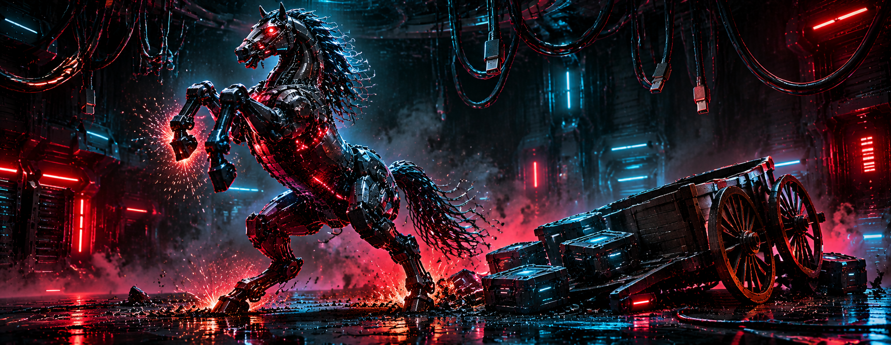

Was ein LLM kann, was nicht, und was es bei jedem Aufruf wirklich sieht.

img/lvl0-ungezaehmt.png
LVL 0 · Station 1 · Grundlagen
Pferd, Geschirr, Kutscher
In „MCP – USB für KI“ hast du den KI-Kern über MCP mit Werkzeugen verbunden.
Am Ende stand „SYSTEM ONLINE“. Trotzdem passiert noch nichts von allein. Warum?
Das englische Wort harness bedeutet Geschirr, das Zaumzeug eines Zugpferds. Das Bild passt erstaunlich gut:
Pferdekutsche
KI-Agent
Kraft
Das Pferd ist stark, weiß aber nicht, wohin die Fahrt geht.
Das LLM ist stark in Sprache, kann aber selbst nichts ausführen.
Lenkung
Das Geschirr überträgt die Kraft auf den Wagen und begrenzt, wohin das Pferd kann.
Der Harness verbindet das LLM mit Tools und begrenzt, was es darf.
Verantwortung
Der Kutscher gibt das Ziel vor, hält die Zügel und kann bremsen.
Der Mensch erteilt den Auftrag, gibt Aktionen frei und kann abbrechen.
Ladung
Der Wagen mit dem, was bewegt werden soll
Die Tools und Daten: MCP-Server, Datenbank
Merksatz: Ein starkes Pferd ohne Geschirr ist nutzlos oder gefährlich. Genauso ist es mit einem LLM ohne Harness.
Zwei Eigenschaften des LLM musst du dir merken, sie erklären fast alles in dieser Lernsituation:
✗ Es kann nichts ausführen
Ein LLM erzeugt nur Text. Will es ein Tool benutzen, schreibt es einen Tool-Wunsch auf.
Ausgeführt wird der Wunsch von einem anderen Programm, oder eben nicht.
✗ Es merkt sich nichts
Jeder Aufruf ist für das LLM der erste. Was vorher geschah, weiß es nur, wenn man es ihm wieder mitschickt.
LVL 0 · Station 2 · Interaktiv
Was sieht das LLM?
Bei jedem Aufruf schickt der Harness dem LLM ein Paket aus drei Teilen. Das LLM sieht nichts anderes.
Hier fragt jemand: „Wie viele Schüler hat die Klasse 7a?“ Der Agent braucht dafür drei Aufrufe.
① SYSTEM-PROMPT · Rolle und Regeln
② VERLAUF · alle bisherigen Nachrichten
③ TOOLLISTE · Name, Parameter, Beschreibung
⟶ ANTWORT DES LLM
Aufträge
Klicke dich durch die drei Aufrufe. Wie wächst der Verlauf? Wie wächst die Zahl der Tokens?
Schalte „Harness schickt den Verlauf mit“ aus. Was antwortet das LLM jetzt bei Aufruf 2 und 3? Erkläre.
Woher weiß das LLM, welche Spalten die Tabelle schueler hat? Es „sieht“ die Datenbank doch nie.
Der System-Prompt hat zwei Teile. Welcher stammt aus der Definitionsdatei, welcher wurde vom Harness ergänzt?
Darum kostet jeder Schritt mehr: Weil das LLM sich nichts merkt, muss der Harness den
kompletten Verlauf jedes Mal neu mitschicken. Bezahlt wird pro Token, also pro Textstück (Faustregel: 4 Zeichen ≈ 1 Token).
System-Prompt und Toolliste werden bei jedem Aufruf erneut bezahlt.
LVL 0 · Station 3 · Grundlagen
Die Bausteine und ihre Schichten
Begriff
Definition (zum Merken)
Im Praxis-Repo
LLM
Programm, das zu einem Text die wahrscheinlichste Fortsetzung erzeugt. Kann nichts ausführen, merkt sich nichts.
Claude, Qwen über Ollama, oder du selbst (--modell mensch)
Tool
Eine normale Funktion. Das LLM sieht nur Name, Beschreibung und Parameter.
query_database, add_grade …
MCP
Offener Standard, wie Tools angeboten (Server) und aufgerufen (Client) werden.
src/index.py ist der MCP-Server
Harness
Rahmenprogramm um das LLM: baut den Kontext, ruft das LLM auf, prüft und führt Tool-Wünsche aus, setzt Grenzen, spricht mit dem Menschen.
Claude Desktop, Claude Code, n8n oder agenten/harness/
Agent
System, in dem ein LLM in einer Schleife selbst entscheidet, welche Tools es nutzt, um ein Ziel zu erreichen.
datenbank-analyst, notenverwalter
Multiagentensystem
Mehrere Agenten mit eigener Rolle, eigenem Kontext und eigenen Rechten lösen gemeinsam eine Aufgabe.
koordinator und Spezialisten
Agent = LLM + Tools + Schleife + Ziel (und Grenzen, die der Harness setzt)
Fehlt die Schleife, ist es ein Chatbot. Fehlen die Tools, kann der Agent nur reden. Fehlt das Ziel, weiß er nicht, wann er fertig ist.
Merke: Das LLM hat keine direkte Verbindung zur Datenbank. Jeder Zugriff läuft über den Harness.
Deshalb kann der Harness auch alles kontrollieren. Wie das genau geht, zeigt LVL 2.
In der MCP-LS hast du in LVL 4, Station 3
schon gesehen: Host ist der Begriff aus der MCP-Spezifikation (das Programm mit den Clients), Harness der Begriff aus der Agenten-Technik
(die Steuerlogik darin). Claude Code ist beides zugleich.